AI-miniguiden fra januar 2026 giver en konkret model for, hvordan en uddannelsesinstitution kan arbejde sig igennem implementeringen af AI-værktøjer i syv trin (Styrelsen for It og Læring, 2026).
- Kortlægning af, hvilke AI-løsninger der allerede er i brug, og hvilke persondata de behandler
- Rolleafklaring af, om skolen er dataansvarlig eller databehandler, og hvem der er idriftsætter eller udbyder
- Lovlighedsvurdering af det enkelte værktøj, som enten forbudt, forbundet med høj risiko eller forbundet med begrænset eller minimal risiko
- Risikovurdering, herunder en konsekvensanalyse i form af en DPIA, hvor det er relevant
- Opfyldelse af informationspligten over for elever og forældre
- Udarbejdelse af politikker og retningslinjer for brugen
- Løbende udvikling af medarbejdernes AI-kompetencer
Modellen kan bruges som et internt tjeklisteværktøj, når skolen skal tage stilling til nye AI-værktøjer, fra SkoleGPT til ChatGPT.
Kommunens vejledning fastslår desuden, at brugen af SkoleGPT er lovlig, også sammen med eleverne. Personalet må gerne bruge andre sprogmodeller til for eksempel undervisningsforberedelse, uden at eleverne inddrages i den brug. Der kan læses mere om de enkelte værktøjer på aikort.pucaabenraa.dk (Conrath m.fl., 2026).
Et konkret billede på, hvordan styringsopgaven kan gribes an, kom fra Billund Kommune, der på Sorø-mødet i august 2026 fortalte om sine erfaringer med AI i folkeskolen. Kommunen har gennem halvandet år udviklet en AI-strategi, hvor teknologien skal tjene undervisningens formål frem for at være et mål i sig selv, og hvor eleverne skal lære at bruge AI kritisk, kreativt og ansvarligt (Netavisen Grindsted, 2026).
Skolelederforeningens formand, Claus Hjortdal, har påpeget, at det er en stor opgave for skolerne at leve op til ministeriets anbefalinger. Det kræver tid, kompetenceudvikling af personalet og økonomiske ressourcer, samtidig med at den teknologiske udvikling går hurtigt (Skolelederforeningen, 2024). Skoleledere har på samme måde efterlyst en tydeligere, tværkommunal koordinering af arbejdet med AI, som endnu ikke er på plads (Folkeskolen, 2024). Styringsopgaven er derfor ikke kun et spørgsmål om trin og tjeklister. Den kræver også, at ledelsen afsætter reel tid og de nødvendige ressourcer.
Refleksioner over de hidtidige erfaringer peger på, at kunstig intelligens ikke bør betragtes som en forbigående trend, og at en pålidelig teknisk løsning til at opdage AI-genereret snyd næppe kan stå alene. I stedet bør opmærksomheden i højere grad rettes mod elevens arbejdsproces, faglige refleksion og formative feedback (Conrath, 2026). Det fører frem til to centrale anbefalinger: at prioritere proces frem for kontrol og at arbejde med en levende vejledning, som løbende justeres i takt med nye erfaringer og udviklingen på området, samtidig med at viden deles på tværs af skoler (Conrath, 2026).
- AI-kørekort for undervisere. aikort.pucaabenraa.dk (sitets egne kapitler om konkrete AI-værktøjer).
- Conrath, M. (2026). AI i skolen: Aabenraa Kommunes rejse med generativ AI i undervisningen. Oplæg på Sorø-mødet, 6.-7. august 2026.
- Conrath, M. (red.), Matthiesen, A., Markussen, B. H., Conradsen, H., Gammelgaard, J., & Therkelsen, M. J. (2026). AI i klasselokalet: Anbefalinger for udnyttelse af generativ kunstig intelligens i undervisningen (3. udgave). Pædagogisk UdviklingsCenter Aabenraa.
- Folkeskolen (2024). 2.300 skoleledere samlet: "AI banker på døren til skolen. Hvis vi vil leve op til vores ansvar, åbner vi den". https://www.folkeskolen.dk/2-300-skoleledere-samlet-ai-banker-paa-doeren-til-skolen-hvis-vi-vil-leve-op-til-vores-ansvar-aabner-vi-den/
- Netavisen Grindsted (2026). Billund kommune deler AI-erfaringer på stort uddannelsespolitisk møde. https://www.netavisengrindsted.dk/2026/08/07/billund-kommune-deler-ai-erfaringer-paa-stort-uddannelsespolitisk-moede/
- Skolelederforeningen / Hjortdal, C. (2024). Anbefalinger om kunstig intelligens udfordrer skolerne. https://skolelederforeningen.org/claus-hjortdal-anbefalinger-om-kunstig-intelligens-udfordrer-skolerne/
- Styrelsen for It og Læring (2026). AI-miniguide (tillæg til vejledning om lovlig brug af kunstig intelligens). https://uvm.dk/media/tdgagnhj/260106-ai-miniguide-tillaeg-til-vejledning-om-lovlig-brug-af-kunstig-intelligens-final.pdf